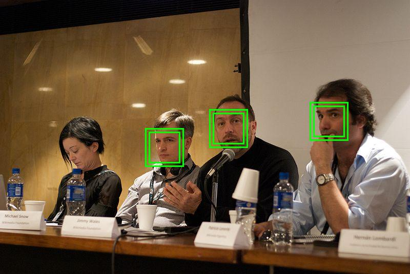
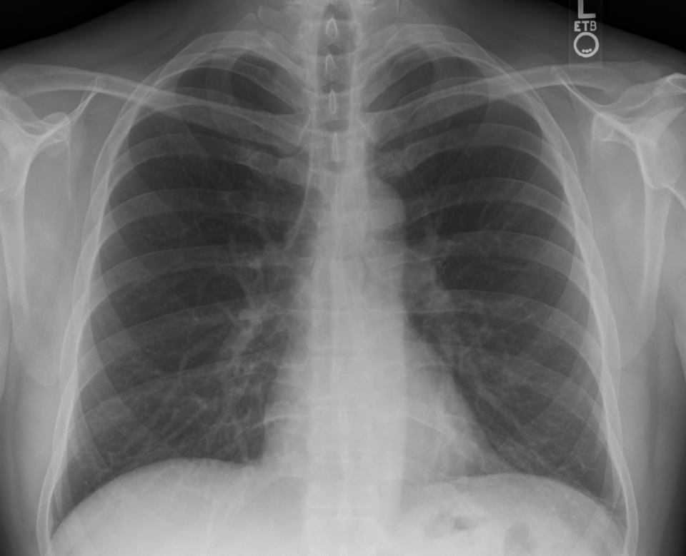

Can we trust it?
AI now helps make real decisions about people. Today: when is that fair, and who answers when it goes wrong?
الـ AI بقى بيساعد ياخد قرارات حقيقية عن ناس. النهارده هنشوف: إمتى ده يبقى عادل، ولما يغلط مين اللي يتحاسب؟
Last time ended on a list of cautions
What AI is good at
- Finding and classifying patterns in data
- Recognising and generating images, audio, text
- Prediction based on data
What needs caution
- Ethical judgments — discrimination, prejudice
- Personal information and privacy
- Biased training data
- The black-box problem, and who is responsible
- Copyright, when protected works are training data
That right-hand column is today’s whole lesson. We open each caution up.
المرة اللي فاتت خلصنا بقايمة تحذيرات. العمود اليمين ده هو درس النهارده كله — هنفتح كل تحذير ونفهمه.
AI helps decide things about people
If the data it learned from was biased, it can be unfair. And it can be hard to know why it decided at all.
الذكاء الاصطناعي النهارده بيساعد في قرارات بتأثر على الناس، زي فرز طلبات التوظيف، والتعرف على الأشخاص، وتحليل البيانات الشخصية. ولو البيانات أو طريقة تصميم النظام أو استخدامه فيها انحياز، ممكن يطلّع نتايج مش عادلة — وساعات يبقى صعب نفسّر هو وصل للقرار ده على أساس إيه.
What ethical issues arise as AI spreads — and what principles should guide how we use it?
السؤال الرئيسي: إيه القضايا الأخلاقية اللي بتظهر مع انتشار الذكاء الاصطناعي، وإيه المبادئ اللي المفروض توجّه استخدامنا ليه؟
Before you read on
A face-recognition AI is more likely to misidentify people from some ethnic groups than others. With your partner, predict: who could be harmed by this, and how? Give a reason.
Keep your answer. It is exactly what Part 1 explains.
مع زميلك، بصّوا على الموقف ده: ذكاء اصطناعي للتعرف على الوجه بيغلط في التعرف على ناس من مجموعات عرقية معينة أكتر من غيرهم. قبل ما تكمّلوا، توقّعوا: مين ممكن يتضرر من ده، وإزاي؟ وقولوا سبب.
Algorithmic bias
الجزء الأول: التحيز الخوارزمي.
Bias in, bias out
| Example from the book | Who is treated unfairly |
|---|---|
| A hiring AI | Unfairly evaluates applicants of a particular gender |
| A face-recognition AI | Is more likely to misidentify particular ethnic groups |
التحيز في أنظمة الذكاء الاصطناعي يعني انحراف أو نمط ممكن يوصّل لنتايج مش عادلة أو بتضر. وممكن ييجي من البيانات، أو من تصميم النظام، أو من طريقة استخدامه والظروف البشرية والاجتماعية حواليه. مثال: نظام توظيف بيفضّل فئة على غيرها من غير وجه حق، أو نظام تعرف على الوجه دقته بتقل مع فئة معينة.
It copies the data it was given
الـ AI محدش قاله يبقى ظالم. هو بيتعلم النمط اللي في الداتا — ولو مجموعة واحدة ماليا الداتا، هيبقى دقيق معاها ويغلط مع الباقي.
Two places bias gets in
In the training data
- Insufficient data on certain attributes
- Past discriminatory tendencies reflected in the data
In the way the system is built
- An inappropriate choice of variables
- A proxy variable — one that indirectly stands in for a protected attribute
- The design of the model itself
الأسباب الرئيسية للتحيز: أولًا بيانات التدريب نفسها تبقى متحيزة — بيانات مش كفاية عن سمات معينة، أو بيانات شايلة نزعات تمييزية قديمة. وتانيًا طريقة بناء النظام: متغيرات مش مناسبة، أو متغير بديل بيمثّل سمة محمية بشكل غير مباشر، أو تصميم النموذج نفسه.
A proxy variable
A protected attribute is something a decision must not discriminate on — gender, or ethnic group. Removing it from the data is not enough.
A hiring AI is never told an applicant’s gender. But it is given another detail that goes closely with gender. It can still learn the old bias through that detail — the detail is standing in for gender. (Our example, to show the idea.)
السمة المحمية حاجة ممنوع القرار يميّز بيها، زي النوع أو المجموعة العرقية. لو شلتها من البيانات مش كفاية: لو فيه متغير تاني مرتبط بيها أوي، الـ AI هيتعلم التحيز من خلاله — ده اللي الكتاب بيسميه «متغير بديل» — بيمثّل السمة المحمية بشكل غير مباشر.
A hiring AI was found to rate applicants of one gender lower. What is the most likely cause — and one measure to fix it?
AI توظيف طلع بيقيّم نوع معين أقل. إيه السبب الأرجح؟ واقترح إجراء واحد يصلّح ده.
Privacy
الجزء التاني: قضايا الخصوصية.
AI created new privacy problems
1 · Surveillance
- Face-recognition cameras in public spaces
- Can identify and track individuals
2 · Mass collection
- Large amounts of online behaviour data
- Collected and analysed
تطور الذكاء الاصطناعي طلّع قضايا جديدة في الخصوصية:
① المراقبة بالتعرف على الوجه: الكاميرات في الأماكن العامة تقدر تتعرف على الناس وتتتبعهم.
② الجمع الجماعي للبيانات الشخصية: بيتجمع ويتحلل كميات ضخمة من بيانات سلوكنا على الإنترنت.
Face recognition in public spaces can improve safety and convenience — and raise privacy concerns. How should the three be balanced?
لما بنستخدم التعرف على الوجه في الأماكن العامة، الأمان والراحة بيتحسنوا، بس في نفس الوقت بتظهر مخاوف على الخصوصية. اشرح إزاي نوازن بين الراحة والأمان وحماية الخصوصية، وقول أنهي مبدأ من مبادئ أخلاقيات الذكاء الاصطناعي أقرب لرأيك.
Explainable AI and responsibility
الجزء التالت: الذكاء الاصطناعي القابل للتفسير (XAI) والمسؤولية.
Why did it decide that?
لو الـ AI صندوق أسود بيديك النتيجة بس، محدش يقدر يتأكد هي صح ولا عادلة. الـ XAI بيطلّع الأسباب كمان — فبني آدم يقدر يراجعها.
Seeing why it decided
When the decision-making process is opaque — a black box — it is difficult to verify whether the result is correct. So “the answer is right, so the process does not matter” is false.
الذكاء الاصطناعي القابل للتفسير (XAI): أساليب بتساعدنا نفهم إيه العوامل اللي خلّت النظام يوصل للنتيجة أو القرار ده. ولما طريقة الوصول للنتيجة تبقى مش واضحة، بيبقى صعب نقيّمها أو نكتشف فيها غلط أو تحيز. عشان كده جملة «طالما النتيجة صح مفيش مشكلة» غلط — وبتيجي في الامتحان.
It got it wrong. Who answers?
المسؤولية: إننا نحدد أدوار وواجبات كل طرف ليه علاقة بتطوير النظام وتشغيله واستخدامه — المطوّر، والجهة اللي بتشغّله، والمستخدم. ومفيش توزيع واحد للمسؤولية ينفع في كل الحالات؛ ده بيختلف حسب النظام وطريقة استخدامه والقواعد الموجودة.
Responsibility is not accountability
Responsibility
- The roles and duties of each party
- Developer, operator, user — who does what
- Who answers when an AI judgment is wrong
Accountability
- Being answerable for the AI’s decisions
- Knowing who can be held to account, according to their role
- One of the four principles of AI ethics
المسؤولية: إننا نحدد أدوار وواجبات كل طرف في تطوير النظام وتشغيله واستخدامه.
المساءلة: إننا نحدد مين الجهات المسؤولة عن النظام وقراراته وتأثيره، ونقدر نحاسبها حسب دورها.
خد بالك: المساءلة مش إنك تشرح القرار — دي وظيفة الذكاء الاصطناعي القابل للتفسير (XAI) — المساءلة إننا نعرف مين اللي يتحاسب على النتيجة.
Two places these questions are not theory


Photos: Wikimedia Commons · public domain or Creative Commons. Used for teaching.
مثالين حقيقيين: التعرّف على الوجه (خصوصية وتحيز)، والتشخيص بالصور (صندوق أسود ومسؤولية). اسأل الطلبة: كل صورة فيهم بتلمس أنهي مشكلة من اللي فاتوا؟
If no one can explain why an AI rejected someone’s job application, is that fair? Which principle is missing?
لو محدش قدر يشرح الذكاء الاصطناعي رفض طلب توظيف حد ليه، يبقى ده عادل؟ وأنهي مبدأ من مبادئ أخلاقيات الذكاء الاصطناعي ناقص هنا؟
The four principles of AI ethics
الجزء الرابع: المبادئ الأساسية لأخلاقيات الذكاء الاصطناعي.
Four principles for using AI appropriately
Fairness
Not unjustly discriminating against any particular person or group
Transparency
Showing the AI’s decision-making process and inner workings clearly
Privacy protection
Handling personal information appropriately and protecting privacy
Accountability
Being answerable for the AI’s decisions
العدالة: إننا منميّزش ظلم ضد أي شخص أو مجموعة.
الشفافية: نوفّر معلومات واضحة ومناسبة عن النظام، وإزاي بيتستخدم، وإزاي بياخد القرار، وحدوده إيه.
حماية الخصوصية: نتعامل مع المعلومات الشخصية بشكل مناسب ونحمي خصوصية الناس.
المساءلة: نحدد مين الجهات المسؤولة عن النظام وقراراته وتأثيره، ونقدر نحاسبها حسب دورها.
Which principle is it?
| Situation | Principle |
|---|---|
| A hiring AI evaluates fairly regardless of gender | Fairness |
| The AI’s decision-making process is disclosed to users in an easy-to-understand way | Transparency |
| Collected personal data is not used for other purposes than originally intended | Privacy protection |
| Someone is answerable when an AI’s diagnostic result turns out to be wrong | Accountability |
Cover the right-hand column and answer first. These four are the book’s own exercise.
غطّوا العمود اليمين وجاوبوا الأول. الأربع مواقف دول هما تمرين الكتاب نفسه، وبييجوا كسؤال توصيل.
Three sentences that look right but are wrong
- “Even if an AI’s process is opaque, there is no problem as long as the result is correct.” — false: an opaque result cannot be verified.
- “Who is responsible when an AI is wrong has already been clearly determined.” — false: views differ and no clear standard exists yet.
- “Algorithmic bias is caused by the AI’s processing speed.” — false: it comes from bias in the training data.
تلات جمل شكلها صح وهي غلط، وبييجوا في الامتحان: «حتى لو طريقة القرار مش واضحة، مفيش مشكلة طالما النتيجة صح» ✗، «مين المسؤول لما الـ AI يغلط متحدد بوضوح» ✗، «التحيز الخوارزمي سببه سرعة معالجة الذكاء الاصطناعي» ✗ — سببه البيانات.
A company wants to use a hiring AI
- Investigate one documented case of an AI accused of bias. What group did it affect, and what data might have caused it?
- Consider responsibility: the developer, the company using it, or the operator — what does each hold?
- Decide one rule the company must follow before using it. Justify it with the principles.
Stuck? If the training data reflects past bias, the AI can repeat it — one fix is to check the data and test the results across different groups.
فكّر كمهندس — ابحث وبعدين قرّر: دوّر على حالة موثّقة اتّهموا فيها نظام ذكاء اصطناعي إنه طلّع نتايج مش عادلة أو متحيزة. فكّر في المسؤولية: المطوّر، ولا الشركة اللي بتستخدمه، ولا المشغّل؟ وبعدين قرّر قاعدة واحدة لازم الشركة تمشي عليها عشان النظام يبقى أعدل، وبرّرها بمبادئ أخلاقيات الذكاء الاصطناعي.
A school wants face recognition at its gate
The cameras would record attendance automatically.
- Identify one practical benefit for the school.
- Identify one privacy concern.
- If the camera misidentifies a student, who should be responsible — the school, or the company that made the AI? Give a reason.
مدرسة عايزة تستخدم كاميرات تعرف على الوجه على البوابة عشان تسجّل الحضور أوتوماتيك. حدد فايدة واحدة للمدرسة، ومشكلة واحدة ليها علاقة بالخصوصية. وبعدين: لو الكاميرا غلطت في التعرف على طالب، مين المفروض يبقى المسؤول — المدرسة، ولا الشركة اللي عملت الذكاء الاصطناعي؟ وقول السبب.
Accurate is not enough
خلّي بالك: لو بيانات التدريب متحيزة، الذكاء الاصطناعي ممكن يكرر نفس التحيز. واستخدام الذكاء الاصطناعي بمسؤولية يعني نراجع التحيز، ونقدر نشرح القرارات، ونعرف مين المسؤول — ماشيين بالعدالة والشفافية وحماية الخصوصية والمساءلة.
Information technology and society, in four lessons
1-1 · How IT developed
Five stages, Moore’s Law, social changes, emerging technologies
1-2 · How AI works
AI → machine learning → deep learning → generative AI, nested; neural networks and their hidden layers
1-3 · AI in daily life and industry
Where it is used, what it is good at, what needs caution
1-4 · Ethical issues with AI
Bias, privacy, XAI and responsibility, the four principles
خلصنا الوحدة الأولى: 1-1 تطور تكنولوجيا المعلومات، 1-2 إزاي الـ AI بيشتغل، 1-3 الـ AI في الحياة والصناعة، 1-4 القضايا الأخلاقية. امتحان الوحدة على الأربعة.
Exam — Lecture 4
امتحان على الدرس ده ومراجعة للوحدة الأولى. في الآخر هيوضحلك انت ضعيف في أنهي جزء بالظبط.